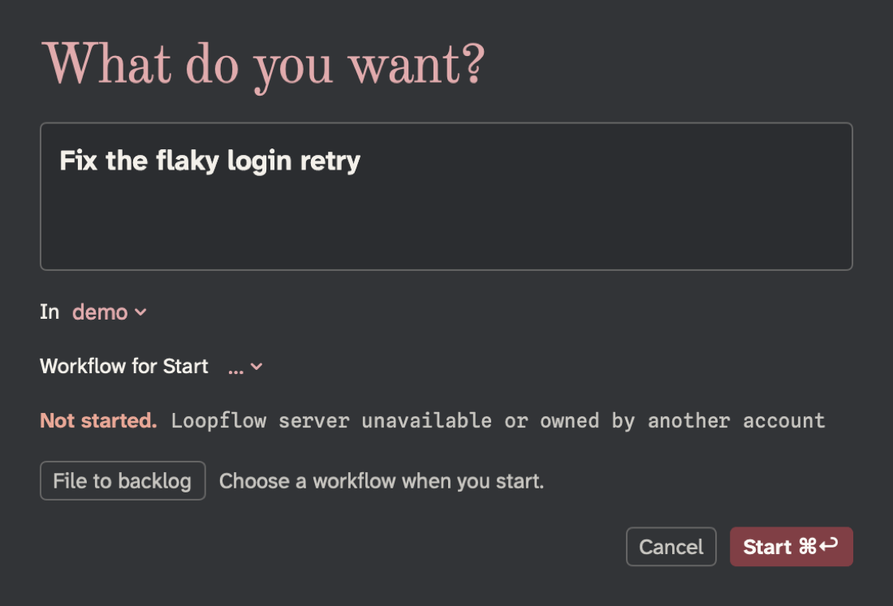
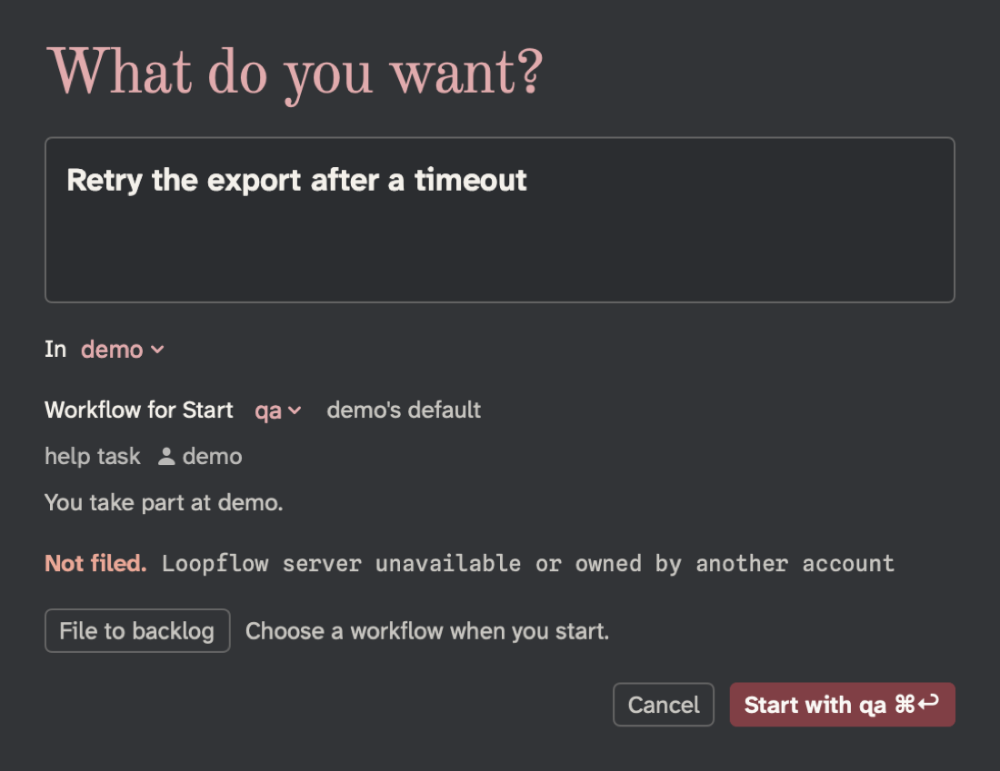
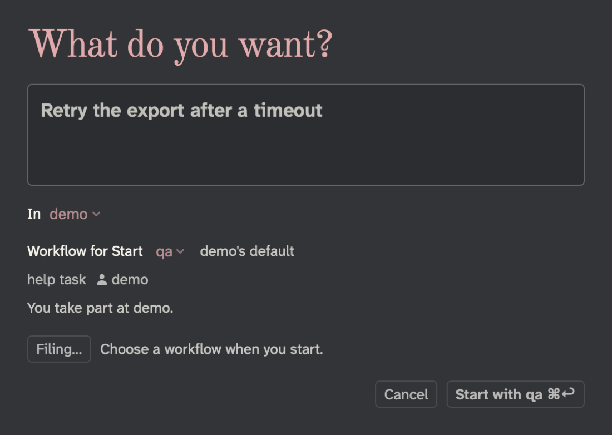
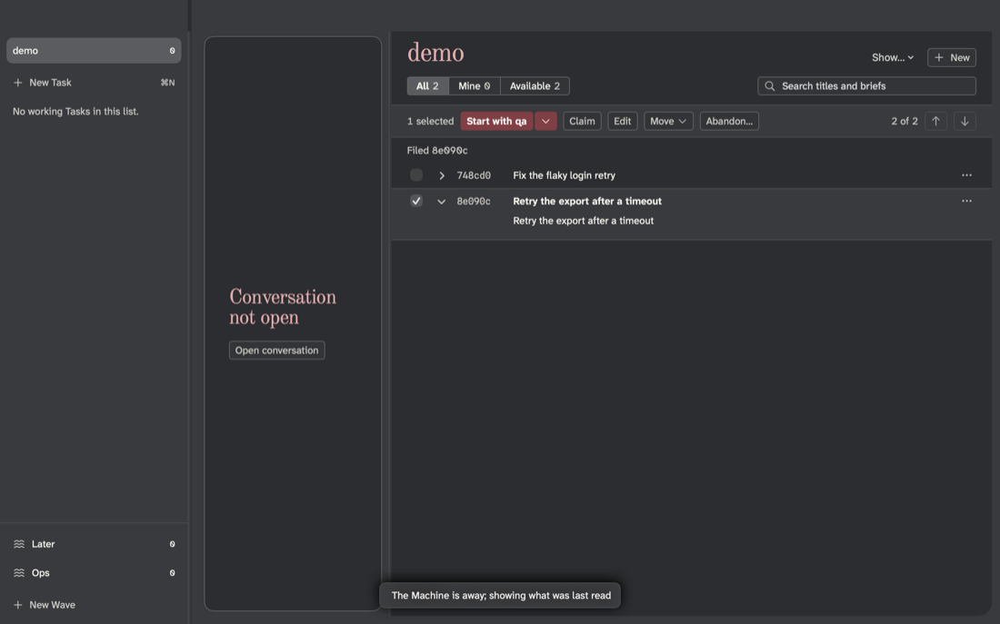
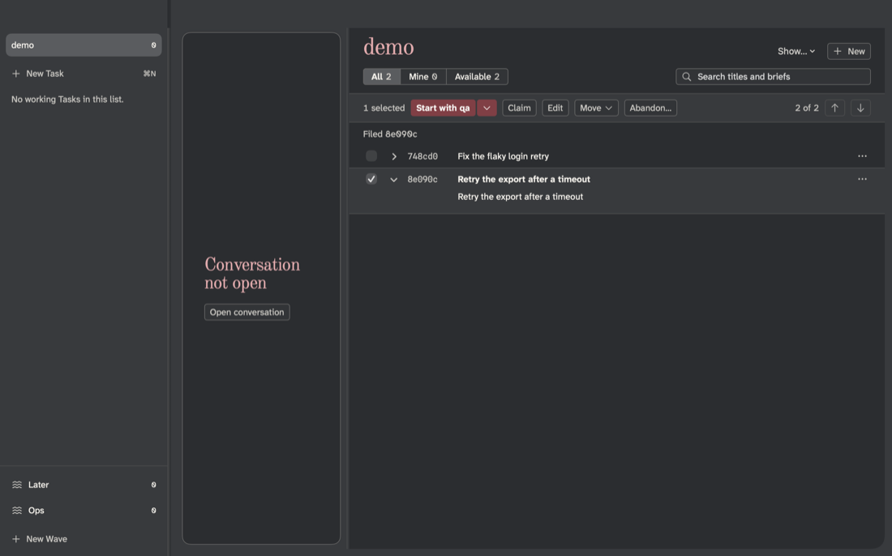
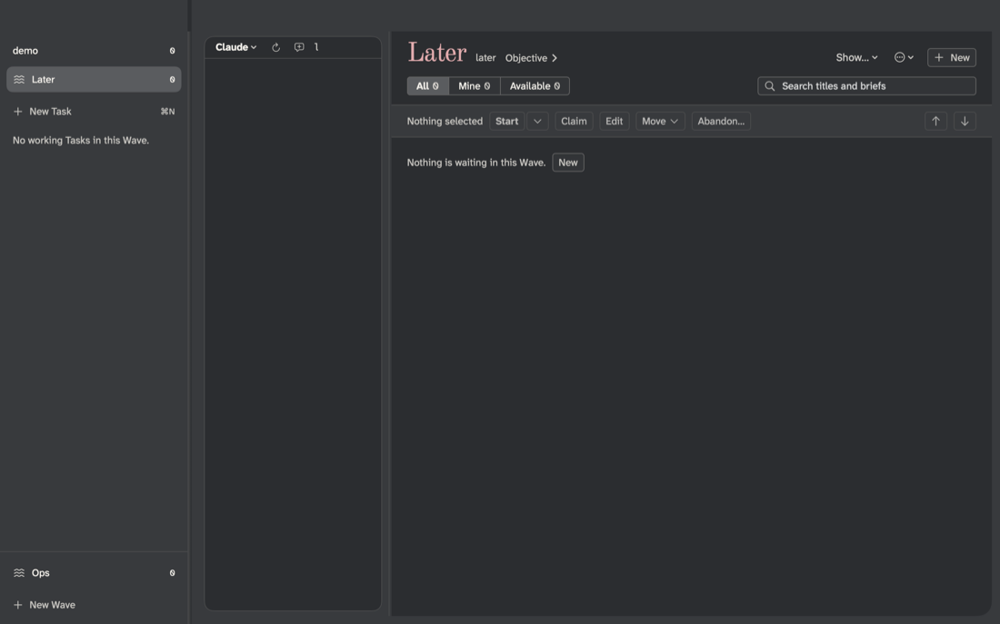
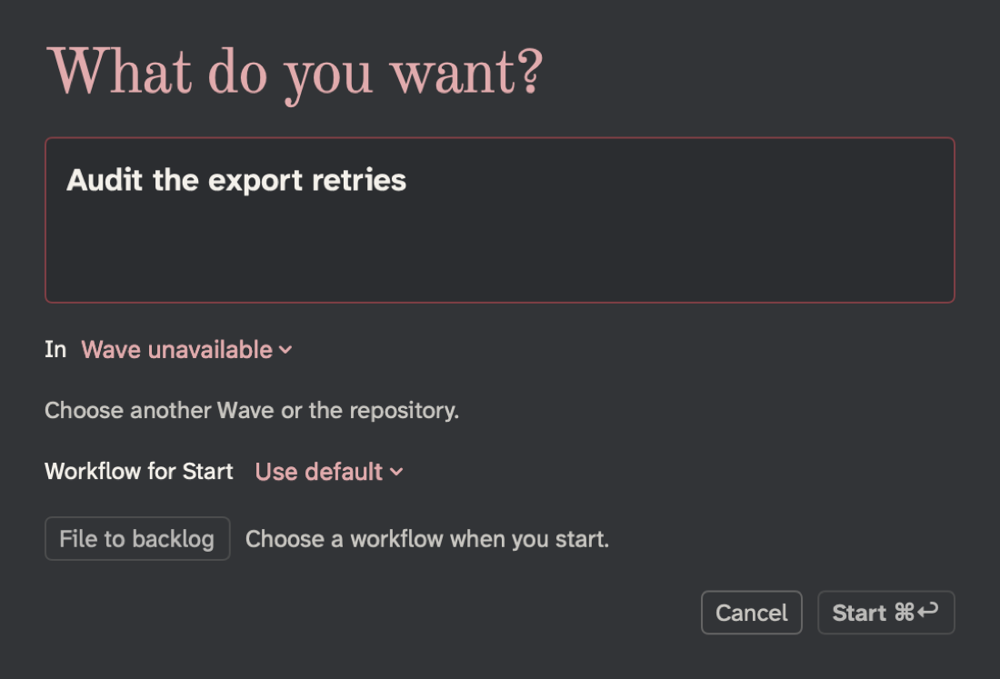
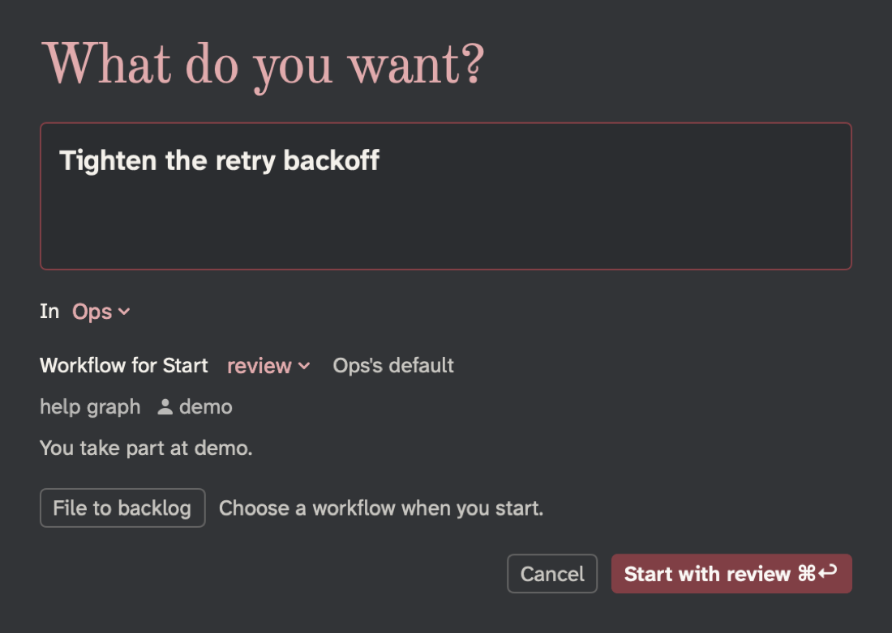
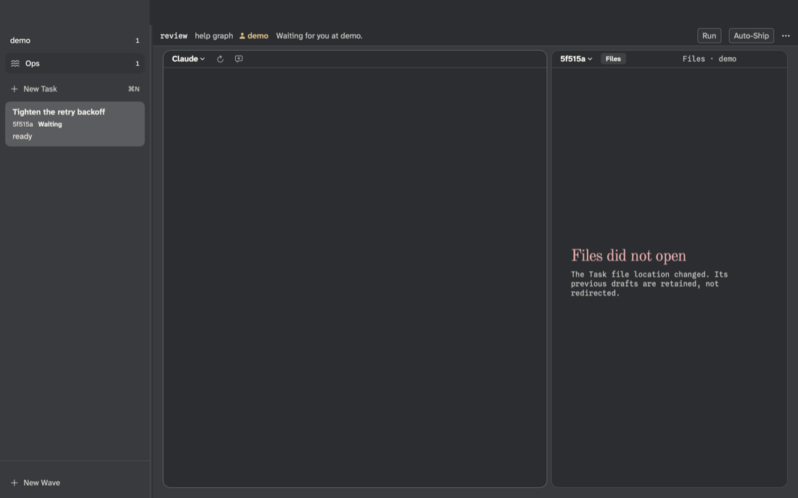

Built from this branch at 1094e27194 plus the fix below, as an isolated Dev bundle
(com.loopflow.mac.qa1065.dev) on a private Machine at /tmp/q1065: its own HOME and LF_HOME,
the branch lf server run, a stand-in claude. Repository demo defaults to Graph
qa; Wave Ops defaults to review. The screen was locked, so the app was driven through
.lf/qa/QAHook.swift and captured with cacheDisplay. Round 1 (commit 852ae13c56) covered File from the
repository and a Wave, inherited Start and Esc; this round checks what changed after it.
Server stopped, words typed, ⌘↩. The sheet stayed with the words, "In demo" and the workflow, and read "Not started. Loopflow server unavailable or owned by another account".

Server stopped (launchd job booted out), then File: "Not filed." with the draft intact. I restarted the server and pressed
File in the same sheet. It showed Filing…, closed, and the backlog had 8e090c selected with its brief open
while the app still said "The Machine is away; showing what was last read". Round 1 saw "Nothing selected" here for
about 30 s. After reconnect the row stayed selected and desktop-cache/submissions was empty.




open loopflow://demo/wave/later (the link lf open --wave later prints) left the window half-switched:
the sidebar said "No working Tasks in this Wave" while the backlog still showed demo. New Task then opened on
Wave unavailable with File and Start disabled, before any Wave was removed. Cause: the link carries the Wave's
name and WorkModel.receiveWorkLink selected it as an ID. Round 1 hid this because the sheet used to fall back to
the repository. The fix resolves the link's name to the Wave's ID; WorkSelectionTests/deliveredWaveLinkSelectsWave
now delivers a named link (its fixture's ID and name differ) and checks the sidebar too. After the fix the link opens Later
and the sheet reads "In Later · qa · Later's default".

lf wave remove later with the sheet open: "In Wave unavailable", "Choose another Wave or the repository.",
workflow "Use default", File and Start disabled, words kept.

From Ops: "Start with review ⌘↩ · Ops's default". ⌘↩ closed the sheet and opened 5f515a with the bar "review · help graph · demo · Waiting for you at demo" and its conversation pane.


scripts/test_desktop.sh --filter 'WorkSelectionTests/deliveredWaveLinkSelectsWave|NewTaskTests': 11 tests in 2 suites passed (agent, this run).Menu; the hook can't open them). Choosing a named workflow, correcting with
Use default, and picking the repository after Wave unavailable stay with the headless suite and an unlocked demo.task_create_tests::…across_a_server_restart.click this round (round 1's did); dclick (down and up through
sendEvent) works. A hook quirk, not a product bug; recorded in .lf/qa/desktop.md.